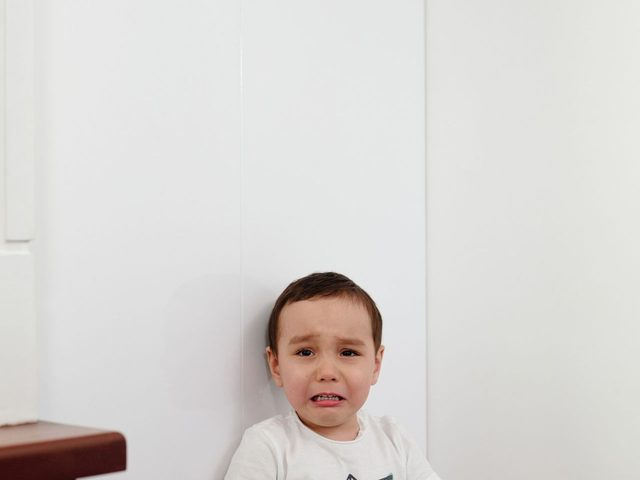

VOCABULARY · 主題 2000 字 PART 2 UNIT 16
School．學校
學校的種類、人、文具、科目、上課用語和考試，共 37 個。科目（biology、physics、law）不可數；physics 雖然有 s，仍當單數。
共 37 個單字．點 🔊 聽發音
1collegen.
大學；學院
go to college 上大學
My sister is a college student.我姊姊是大學生。

2kindergartenn.
幼稚園
德文來的字
My little brother goes to kindergarten.我弟弟上幼稚園。

3universityn.
大學
a university（u 讀 [ju]，用 a）
She studies at National Taiwan University.她在台灣大學讀書。

4campusn.
校園
on campus 在校園裡
There is a big library on campus.校園裡有一間大圖書館。

5guardn.
警衛；守衛
security guard 保全
The guard opens the school gate at 7 a.m.警衛早上七點開校門。
6boardn.
板；黑板；布告欄
blackboard 黑板；on board 在船／飛機上
The teacher wrote the date on the board.老師在黑板上寫日期。
7crayonn.
蠟筆
The kids drew pictures with crayons.孩子們用蠟筆畫畫。

8diaryn.
日記
複數 diaries；keep a diary 寫日記
I keep a diary in English.我用英文寫日記。

9inkn.
墨水
不可數
The printer is out of ink.印表機沒墨水了。
10magazinen.
雜誌
I read a science magazine every month.我每個月讀一本科學雜誌。

11pencil boxn.
鉛筆盒
= pencil case
My pencil box is full of colored pens.我的鉛筆盒裝滿了彩色筆。

12sheetn.
床單；一張（紙）
a sheet of paper 一張紙
Take out a sheet of paper for the quiz.拿出一張紙來小考。

13textbookn.
教科書；課本
text + book
Open your textbook to page 20.把課本翻到第 20 頁。
14backpackn.
背包；書包
back + pack
Don't forget your lunch in your backpack.別忘了書包裡的午餐。

15geographyn.
地理
不可數
In geography class, we learn about maps.地理課我們學看地圖。

16biologyn.
生物（學）
不可數；bio- 生命
We studied plants in biology class.我們在生物課研究植物。
17chemistryn.
化學
不可數；ch 讀 [k]
Be careful in the chemistry lab.在化學實驗室要小心。

18physicsn.
物理
不可數，當單數：Physics is…
Physics is hard but interesting.物理很難但很有趣。
19lawn.
法律
break the law 犯法
My cousin studies law at university.我表哥在大學讀法律。

20social sciencen.
社會科學
不可數
History and geography are parts of social science.歷史和地理都屬於社會科學。
21cheerleadern.
啦啦隊員
cheer 歡呼 + leader
The cheerleaders danced at the basketball game.啦啦隊員在籃球賽上跳舞。

22class leadern.
班長
Tom is our class leader this semester.Tom 是我們這學期的班長。

23principaln.
校長
The principal gave a speech on the first day of school.開學第一天校長致詞。
24behavev.
表現；守規矩
behave yourself 規矩一點；behavior 行為
Please behave yourself in the museum.在博物館裡請守規矩。
25pronouncev.
發音；唸
pronunciation 發音
How do you pronounce this word?這個字怎麼唸？

26punishv.
處罰
punishment 處罰
The teacher punished him for cheating.老師因為他作弊處罰他。

27reviewv. / n.
複習；評論
re- 再 + view 看
Let's review Lesson 3 before the test.考試前我們來複習第三課。
28underlinev.
在…下面畫線
under + line
Underline the important words.把重要的字畫底線。

29alphabetn.
字母表
the English alphabet 英文字母（26 個）
There are 26 letters in the English alphabet.英文字母有 26 個。
30conversationn.
對話；談話
have a conversation with…
We practiced a conversation in pairs.我們兩兩一組練習對話。

31examn.
考試
= examination；an exam
I have a math exam tomorrow.我明天有數學考試。
32finaladj. / n.
最後的；期末考
final exam 期末考
This is the final question.這是最後一題。

33poemn.
詩
poet 詩人
We read a poem about the moon.我們讀了一首關於月亮的詩。
34recordv. / n.
記錄；錄音；紀錄
動詞重音在後，名詞重音在前
He broke the school record in the 100-meter race.他打破了學校 100 公尺的紀錄。

35scoren.
分數；得分
get a high score 得高分
I got a good score on the English test.我英文考試得了好成績。

36vocabularyn.
字彙；詞彙
不可數
Reading helps you build your vocabulary.閱讀幫你增加字彙量。

37semestern.
學期
一學年有兩個學期
The new semester starts in September.新學期九月開始。
FOCUS
學校的種類
| 學校 | 英文 |
|---|---|
| 幼稚園 | kindergarten |
| 國小 | elementary school |
| 國中 | junior high school |
| 高中 | senior high school |
| 大學 | university／college |
a university（u 開頭但讀 [ju]，所以用 a）。
FOCUS
科目
| 科目 | 英文 |
|---|---|
| 地理 | geography |
| 生物 | biology |
| 化學 | chemistry |
| 物理 | physics |
| 法律 | law |
科目不可數，前面不加 a；physics 字尾有 s 但當單數用。